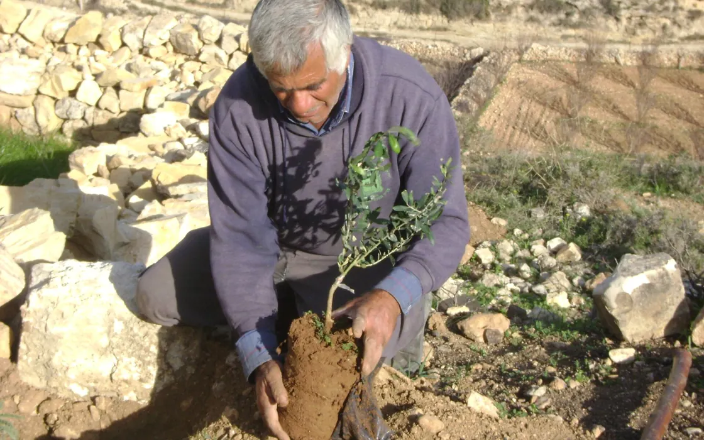

West BankEnvironment
Seven figures from the Palestinian environment authority's count of 760 violations in the West Bank
The Environmental Quality Authority says it logged 760 environmental violations by Israeli forces and settlers from January to September 2026.

The Palestinian Environmental Quality Authority marked the UN's day for preventing the exploitation of the environment in war, 6 November, by publishing its tally for the first nine months of 2026: 760 environmental violations in the West Bank that it attributes to Israeli forces and settlers. The figures are the authority's own and were reported by WAFA. Seven of them give a sense of what is being counted, and of how broadly the authority defines environmental harm.
203 and 178. The largest category, 203 incidents, concerns farmland and nature reserves: olive groves bulldozed, settlement roads cut through fields, thousands of dunums seized, land fenced off for herding outposts and greenhouses burned. A further 178 incidents targeted forests and vegetation. The authority says thousands of fruit-bearing and perennial trees were uprooted, about 100,000 of them olive trees by the end of September, and that wheat and barley fields were set alight.
$67 million. That is the authority's estimate of losses from the destruction of trees and vegetation alone. The UN's own count for the current olive season is narrower but points the same way: OCHA recorded 377 harvest-related settler attacks between 1 September and 2 November, more than in any previous season, and UN experts said more than 6,000 trees and saplings were vandalised during the 2025 harvest.
185. The authority logged this many violations involving hazardous waste and demolition debris, thousands of tons of construction rubble concentrated in Jenin and Tulkarm governorates and their refugee camps, where Israeli military operations since early 2025 have demolished large numbers of buildings. Five more incidents damaged sewage networks in the two camps and halted wastewater drainage for residents, it said.
37 and 35. Water was the target in 72 incidents: 37 against sources, including wells that were filled in or buried, springs destroyed or taken over and tanks wrecked, and 35 against pipelines and irrigation networks. The authority says the main pipe serving the Birin area was destroyed at Khallet al-Furn, cutting off about 450 people, and that a pipe to Ad-Duqaiqa village in Hebron governorate was severed, leaving 700 residents without water.
52. This is the number of attacks on livestock and food security, including the theft of hundreds of animals and the release of settlers' herds onto cultivated land. The practice has continued into the autumn: on 9 November, WAFA reported, settlers let livestock loose on Palestinian farmland in Hebron governorate, damaging crops, and on 4 November the agency reported the theft of a banana harvest from Palestinian land in Nablus governorate.
The authority argues that the pattern amounts to environmental war crimes under the Rome Statute and the Geneva Conventions, a legal assessment that is its own. Its statement also covered Gaza, where it estimates that 82 per cent of farmland and 97 per cent of fruit and olive trees have been destroyed or bulldozed. The seven categories it itemised add up to 695, so about 65 of the 760 incidents are not broken down in the published summary.
On the record
Reported from the sources above, in our own words.